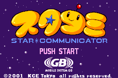

Sutakomi - Star Communicator (Japan)
Stateless / Passcode 📺 Joybus 🎮 4P Link 🔌 Mobile Adapter GB (CGB-005)
Cartridge Identity
- Game Code
ASKJ(FamilyASK)- Header Title
STARCOM- Maker / Revision
EM/ rev0- ROM Size
- 8.0 MiB (8,388,608 B)
- Save Media
None / Unknown- SHA-256
8431715720d40839651a1a638f1b3596b39cf354d8251c49109b8876d88e6c07
Screenshots

Niche & Rare Accessories
Detected niche/rare GBA accessory support: 🔌 Mobile Adapter GB (CGB-005).
Full 343-ROM corpus breakdown in the Cartridge Hardware & Niche Accessories Reference · auto-detected from ROM bytes via
gbakit inspect.
- Mobile Adapter GB (CGB-005)
- Mobile System GB HTTP/1.0 + SMTP/POP3 stack
Link Cable & Multiplayer Communications
This title contains detected communication capabilities: 📺 Joybus 🎮 4P Link.
Detailed protocol specifications, SIO registers, Joybus commands, and MultiBoot sequences are documented in the Link & Multiplayer Reference.
- Multi-Player SIO (4P)
- 16-bit ring network · SIOCNT (
0x04000128) literals:0x0624cc,0x062880,0x0628d8· SIODATA32/SIOMULTI0 (0x04000120) literals:0x062888,0x0649b4 - GameCube Joybus
- Register literal
REG_JOYCNT(0x04000140) at offset0x668348 - GameCube Joybus
- Register literal
REG_JOYCNT(0x04000140) at offset0x668354
Cartridge Storage Architecture: Stateless / Passcode
Zero non-volatile battery hardware: This cartridge PCB contains ROM only (no SRAM, Flash, or EEPROM chips). Progression is preserved via on-screen passcodes or session-only gameplay. No
.sav file is generated or required.
Asset Map (formatkit.asset-map.v1)
Download ASKJ-r0-8431715720d40839.asset-map.json.gz (35,457 B (34.6 KiB)) Verified PASS · 0.37% coverage
| Metric | Bytes / Value | Entries |
|---|---|---|
| Identified | 31,266 B (30.5 KiB) (0.37%) | 296 |
| Mapped | 0 B (0.00%) | 0 |
| Opaque | 0 B (0.00%) | 0 |
| Unknown | 8,357,342 B (7.97 MiB) (99.63%) | 281 |
| Total ROM Size | 8,388,608 B (8.00 MiB) | 577 |
| Coverage % | 0.37% | — |
| Entries w/ Code Refs | 324 / 577 (56.15%) | — |
Top Identified Formats: gfx.gba-palette (294 · 18,528 B (18.1 KiB)) · compress.bios-rle (1 · 12,546 B (12.3 KiB)) · gba.rom-header (1 · 192 B)
Largest unknown Extents (Headerless / Custom Asset Candidates)
| Offset | Size | Shannon Entropy | Code Refs |
|---|---|---|---|
0x00484868 | 1,564,916 B (1.49 MiB) | 3.549 bits/B | 0 |
0x00738588 | 817,784 B (798.6 KiB) | 5.280 bits/B | 0 |
0x00240820 | 740,628 B (723.3 KiB) | 3.810 bits/B | 0 |
0x00300868 | 588,956 B (575.2 KiB) | 3.791 bits/B | 0 |
0x0008F804 | 552,532 B (539.6 KiB) | 6.870 bits/B | 0 |
gzip -dk ASKJ-r0-8431715720d40839.asset-map.json.gz && gbakit map verify rom.gba ASKJ-r0-8431715720d40839.asset-map.json
gbakit assets export rom.gba --asset-map ASKJ-r0-8431715720d40839.asset-map.json -o out/Text, Fonts & Scene Data
- Primary Text Encoding
- Shift-JIS (uncompressed) (
4ASCII strings ·200Shift-JIS runs) - Font & VWF Indicators
- VWF Width Table 1bpp Font · BIOS SWIs: BitUnPack
0x10:0· LZ770x11/12:26· Huffman0x13:0· RLE0x14/15:1 - Scene & Packaging
28ROM pointer tables (≥32 entries,3≥200) ·1relativeu32TOCs ·475OAM metasprite hits
Password System
- Save Media
- Battery-Backed (SRAM)
- Password Class
- Password UI Strings Detected (
password_ui_strings_only)
Hardware MMIO Subsystems
ppu_display0x802b0fc